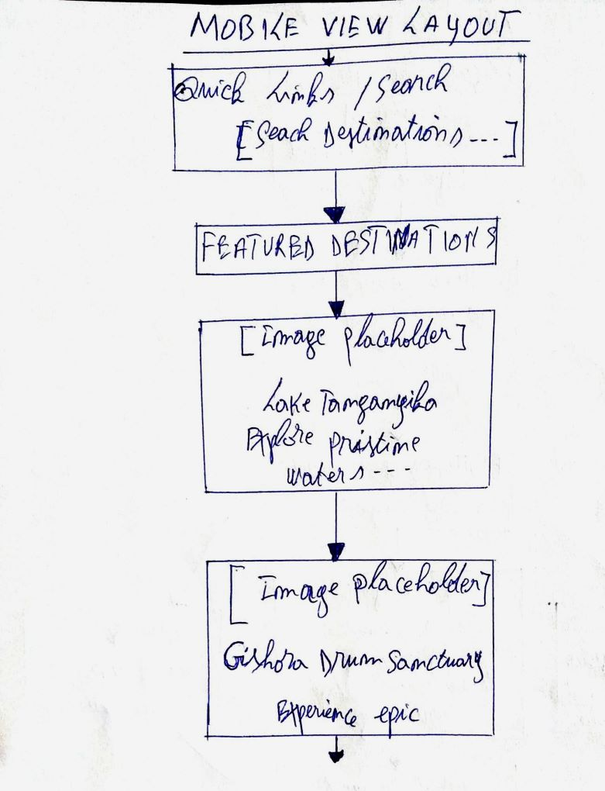
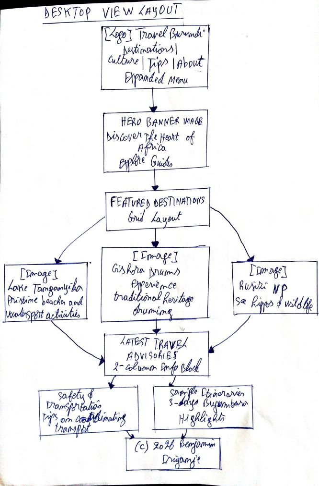

Site Name
Name: Travel Burundi
Reasoning: I chose this name because Burundi has an incredible, emerging eco-tourism sector but currently lacks a modern, centralized digital hub for international travelers. This site will act as a clear, welcoming digital gateway to the "Heart of Africa."
Potential Domain Name: travelburundi.bi
Site Purpose
The purpose of Travel Burundi is to promote sustainable tourism by providing comprehensive, reliable travel guides. The site will highlight cultural landmarks (such as the Gishora Drum Sanctuary), outline local safety tips, map out natural wonders like Lake Tanganyika and Rusizi National Park, and offer sample itineraries to assist independent travelers and nature lovers in planning their journeys.
Target Audience Scenarios
To ensure the website meets user needs, its content will answer critical target audience questions such as:
- "I am planning a 3-day trip around Bujumbura. What are the absolute must-see nature reserves nearby, and do I need to book a local guide in advance?"
- "Where can I go to witness an authentic Burundian drumming performance, and how do I safely coordinate transport to get there?"
Color Schema
The site colors are selected to honor the lush landscapes and cultural vitality of Burundi, creating an inviting, professional look.
#115740
Used for primary headers, navigation menus, and structural backgrounds.
#D12421
Used for buttons, calls-to-action, text links, and interactive elements.
#F9F6F0
Used as the main background canvas across all pages for high readability.
Typography
Heading Font: Montserrat (Bold)
This clean, geometric sans-serif typeface will be applied to all major titles and section headers (H1, H2, H3) to establish a bold, modern, and trustworthy tone.
Body Font: Open Sans (Regular/Semi-Bold)
This highly legible sans-serif font will be used for all paragraphs, lists, and main guide copy, ensuring an effortless reading experience for users on both mobile screens and desktop monitors.
Wireframes
Below are placeholders for the homepage layouts.
Mobile View Layout

Single-column layout with a top navigation bar, prominent hero section, and vertical content cards.Desktop View Layout

Multi-column layout utilizing a wider grid layout for destination feature highlights.